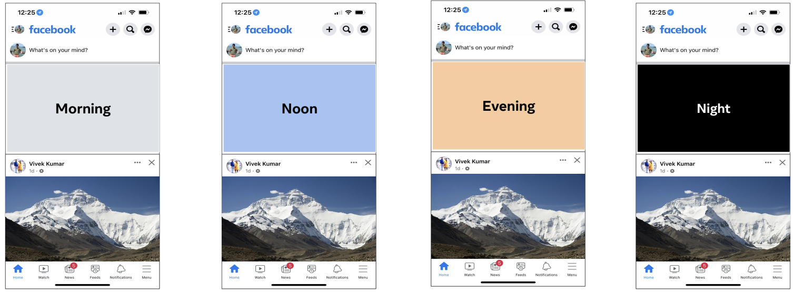
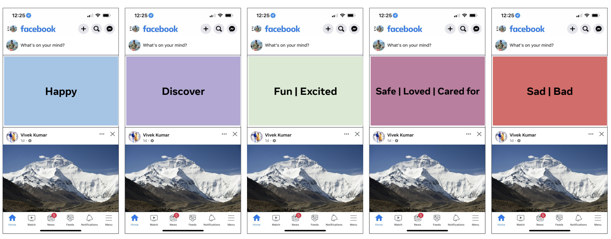

UX case Study
Reinventing Facebook's Home
June 2022 - September 2022
A Generative UX Case Study exploring Opportunities for Facebook's home.
Problem
The Facebook home contains various features and services.
In this internship project, I explore futuristic Opportunities and designs to appeal for the younger population
of Facebook.
Solution
I am bound by NDA and can not share my outcomes and insights for this project.
Instead, I will share innovative research methods I developed and used as a part of this internship.
What research methods can be used and executed to
identify futuristic opportunities for Facebook's Home?
Empathize
What users want to see and when?
Goal:
Designing predictable interfaces and experiences allows users to understand and develop a rhythm in how they use a product. Through this method we aim to uncover how time can act as a control variable to determine what participants want in a product.
Method:
Time Loop is a method where we put participants in situations across various times of the day and discuss how the product/application can help them with tasks at various parts of the day.
We presented visual cues (one at a time), as shown (in the image below), to have users talk about how Facebook Home can help with what they’re doing at various times of the day. Participants were asked questions of the following nature: "It's , and you open the Facebook app; what would you like to see here?". Since it was a semi-structured interview based on participants’ occupations, we modified certain questions to give them more context and situational awareness. For example, a university student was asked, "After a busy day, you come back home in the evening and relax on the couch. Imagine you open Facebook. What would you like to see here?"
Pros:
- This method highlights user routines and how a product can fit into their daily routines and lives. For example, a participant shared they would like to see
weather on Facebook Home as the first thing in the morning.
- It helps identify patterns and generate themes around the different experiences and features participants share.
- This method strongly advocates for the user and keeps them in the driver's seat to indicate what they want to see.
- Despite using time as a driving factor, this method allows us to gain insights into other factors that can determine which experience to present to users. For example, a participant shared they would not be interested in seeing Reels
while traveling or if they do not have their headphones connected.
Cons:
- Participants might not be interested in seeing a variety of experiences in a product and might not be vocal. If this happens, try asking them to talk
through their day, and reference activities they perform throughout their day
when probing into how Facebook Home can help them in their activity.
- For a researcher, it might appear that the participant wants the entire
Facebook app on Facebook Home. Do not stop/interrupt the participant when they are
sharing such ideas. Focus on quantity over quality at this point. Distill and filter ideas as part of your analysis process.

How do you feel and what do you want to see?
Goal:
Facebook has multiple use cases and is not just used for entertainment and connection. For that purpose, it is important Facebook supports multiple emotional states. Through this method we aim to uncover how a product can serve different emotional situations.
Method:
Key word cues is a method where we present participants
with different emotional states and ask them to describe how a product would help them experience the displayed emotional state or intent. To help participants think through and talk about what we can
show on Facebook Home, we presented visual cues as shown below. Participants were asked questions such as, "What is it we can show on here (i.e. Facebook Home) that would make you experience or resonate with [presented keyword]"
Pros:
- This method helps us understand different content and formats we can present to users to help them imagine a certain emotion.
- We can generate themes from participants’ topics and interests to support their feelings. For example, participants were interested in having friends and family content presented on TOH to make them feel loved and safe. Another example is how certain participants shared having positive mental health quotes on TOH after a busy day of work would be useful for them.
Cons:
- Participants might share one-word answers in terms of what they would like to see. For example, participants might share that "puppy content" would
make them feel happy. Probe further into what kind of puppy content they
would like. Would they like to see videos, reels, or stories? Probe further into
why puppy content makes them happy.
- Emotions are relative to each individual, making it potentially tricky to generate more generalized themes.
- Deciding when to support which emotion can become difficult to determine. Do not use this method to identify factors to help determine when to present
experiences to users; instead, use this method to generate which types of
experiences can be presented to users.
